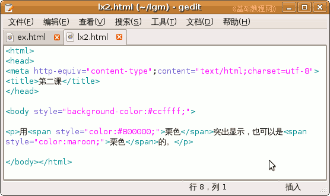
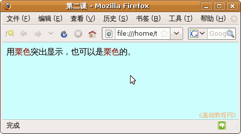

CSS 基础入门教程
作者：TeliuTe 来源：基础教程网
网页的背景包括背景色和背景图片，使用 css 可以很方便地设定它们，下面我们先来看背景色的练习；
1、文本编辑器
1）打开记事本或 gedit、leafpad 文本编辑器，gedit 在查看菜单里选择“HTML”；
2）点菜单“文件－保存”命令，以“lx2.html”为文件名，类型所有文件，编码 UTF-8，保存到自己的文件夹；
3）按照上一课的方法，输入 <html> 、 <head> 和 <body> 的内容；
2、背景色
1）找到 <body> 标签，在它里面加上下面的内容，成为下面这样，# 号表示颜色，用十六进制数和英文名称都可以；
<body style="background-color:#ccffff;">
2）这是一种浅蓝的颜色，本教程使用这种蓝色作为页面背景色，接着输入下面的内容；
<p>用<span style="color:#800000;">栗色</span>突出显示，也可以是 <span style="color:maroon;">栗色</span>的。</p>

3）用 <span> 标签来设置一小部分文字的样式，里面的颜色既可以用代码，也可以像后面那样用单词；
保存一下文件，回到自己的文件夹，打开 lx2 网页，看看背景色的效果；

本节学习了背景色的设置方法，如果你成功地完成了练习，请继续学习下一课内容；
本教程由86团学校TeliuTe制作|著作权所有
基础教程网：http://teliute.org/
美丽的校园……
转载和引用本站内容，请保留作者和本站链接。